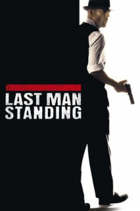

Country:United States, 101 minutes
Spoken languages:
Genres:Action, Crime, Drama, Thriller, Mystery
Director(s):Walter Hill
Writer(s):Walter Hill
Video Codec:Unknown
Number: 1223


Certification:R
Storyline:
John Smith is a mysterious stranger who is drawn into a vicious war between two Prohibition-era gangs. In a dangerous game, he switches allegiances from one to another, offering his services to the highest bidder. As the death toll mounts, Smith takes the law into his own hands in a deadly race to stay alive.
Cast:


Medium: Original DVD,
Loaned: No
Aspect ratio: Unknown